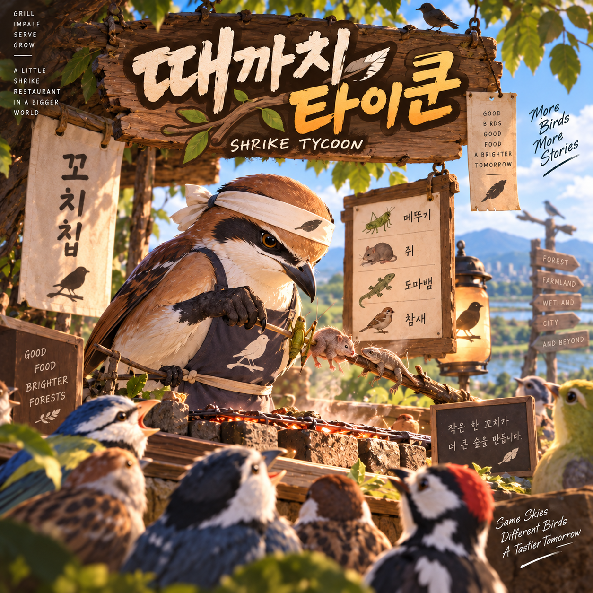

SHRIKE TYCOON · PROTOTYPE 0.6.4.2
때까치 타이쿤
Guided Start Flow · World 1–5
누적 XP0 XP0회 플레이 · 0명 서빙
1 · WORLD2 · STAGE3 · CHEF4 · START
🐦
STEP 1 · WORLD
WORLD JOURNEY
농경지에서 시작해 하천·습지, 산과 밤, 히말라야, 중앙아시아 초원까지 이어집니다. 먼저 플레이할 월드를 선택하세요.

SHRIKE TYCOON · PROTOTYPE 0.6.4.2
Guided Start Flow · World 1–5
STEP 1 · WORLD
농경지에서 시작해 하천·습지, 산과 밤, 히말라야, 중앙아시아 초원까지 이어집니다. 먼저 플레이할 월드를 선택하세요.